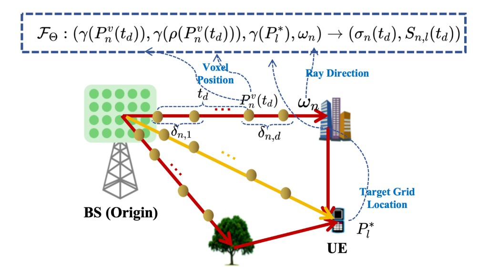

Authors
Who built it
Why
RSRP alone is blind to geometry
Classical LSCM lacks environmental priors. Pure neural radio fields often need labeled APS and ignore scene structure. MM-LSCM closes both gaps with a dual-branch neural radio radiance field.
Self-supervised radio loss
Train with ŷ = Φ x̂ from beam RSRP—no ground-truth APS required.
LiDAR as a second modality
Voxel density guides hitting probability and depth supervision.
Shared stop probability
One coherence weight renders channel APS and obstacle depth together.
Method
Volume-rendering multi-modal synthesis
Rays leave the BS; each sample queries FΘ for density σ and direction-dependent signal S. Stop weights synthesize APS x̂ and depth ẑ.

Results
Lower error, stronger robustness
Indoor laboratory setting. MAE in dB; lower is better.
| Method | Sub-Task 1 | Sub-Task 2 | Sub-Task 3 |
|---|---|---|---|
| MM-LSCM | 0.87 | 0.56 | 0.90 |
| SM-LSCM | 1.09 | 0.70 | 1.10 |
| WNOMP | 1.85 | — | — |
Sub-Task 1: rotated RSRP @ explored · Sub-Task 2: RSRP @ unexplored · Sub-Task 3: rotated RSRP @ unexplored.
Cite
BibTeX
@inproceedings{wang2025multi,
title={Multi-modal neural radio radiance field for localized statistical channel modelling},
author={Wang, Yiheng and Zhang, Shutao and Xue, Ye and Chang, Tsung-Hui},
booktitle={2025 IEEE Globecom Workshops (GC Wkshps)},
pages={1005--1010},
year={2025},
organization={IEEE}
}